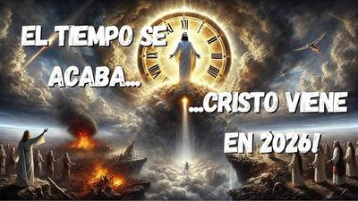

Si hay algo más predecible que las supuestas «profecías» del fin del mundo… es que vuelven a aparecer cada diciembre, como los fuegos artificiales o los arrepentimientos de último minuto. Basta que el calendario se acerque al 31, para que broten por todas partes los autoproclamados «profetas», «videntes», «pastores iluminados» y demás profesionales del catastrofismo, anunciando varias calamidades y, por supuesto, el inevitable Fin del Mundo™.


Un evento que, según ellos, está «a la vuelta de la esquina desde hace dos milenios». Casi podríamos decir que es el proyecto más atrasado de la historia. Y es que estos «profetas cristianos» siempre citan aquellas palabras de Jesús en los evangelios, sobre un inminente del desastre mundial. Pero omiten o reinterpretan aquellas palabras en que Jesús asegura solemnemente: «No pasará esta generación hasta que todo esto acontezca.» (Marcos 13:30; Mateo 24:34; Lucas 21:32)
Bien claro se refiere a su propia generación, aquella del siglo I. La misma de sus discípulos, su gente, sus contemporáneos. Porque obviamente Jesús hablaba de ellos, no de nosotros, quienes estamos aquí, casi veinte siglos después, sin señales de trompetas celestiales, ni caballos apocalípticos, ni estrellas cayendo del cielo como meteoritos.
Sin embargo, nada detiene a los anunciadores profesionales del desastre. Son como esos vendedores de humo, pero con un marketing más «espiritual». Les encanta generar pensamientos mórbidos, fomentar paranoia y sembrar miedo; total, nada vende más que la angustia. Y si pueden aderezarlo con teorías conspirativas, mucho mejor: alienígenas, gobiernos secretos, asteroides vengativos, códigos bíblicos escondidos entre letras y números… cualquier cosa que suene lo suficientemente oscura como para captar la atención, pero lo bastante vaga como para no ser refutada con facilidad.
Pero la verdad incómoda es que se dedican a anunciar desgracias porque ese es su negocio. En el fondo, los profetas del desastre aplican la misma estrategia que un vendedor cualquiera: crear urgencia. El vendedor te dice que la superoferta termina «en cinco minutos». El profeta te dice que el mundo expira… bueno, «muy pronto, hermanito, arrepiéntete ahora, porque mañana será demasiado tarde».
El objetivo es el mismo: hacerte actuar sin pensar. Primero te asustan; luego te dicen que sólo ellos tienen la solución; y finalmente, una vez que entras en su círculo, aplican otras técnicas para que no escapes de su control. Un clásico manual de manipulación psicológica, pero con «sello divino».
Sin embargo, la historia nos muestra una realidad que a estos vendedores del miedo no les gusta ver: llevamos apenas 25 años de este milenio, y ya contamos con al menos diez finales del mundo fallidos. Todos anunciados con gran seguridad por «verdaderos profetas», por quienes ya no deberíamos existir, por todo un desfile de apocalipsis no cumplidos:
El «enloquecimiento» total de computadoras (Y2K).
Profecías cristianas reinterpretadas por la enésima vez.
Alineaciones planetarias devastadoras.
Flotas de naves alienígenas impacientes.
Algún autoproclamado «Dios encarnado» con mensajes «urgentes».
Numerología bíblica creativa.
El famoso «rapto», que hace que muchos se deshagan de sus bienes materiales.
Invasiones extraterrestres alternas.
Una supernova peligrosamente cercana.
El calendario maya mal leído (más de una vez).
Todos fallaron con igual precisión, porque sencillamente nadie puede conocer el futuro, aunque muchos puedan lucrar fingiendo que sí.
Mientras tanto la ciencia, menos histriónica y más aburridamente honesta, responde sin ningún drama, recordándonos que sí habrá, en efecto, un «Fin del Mundo», pero no por ahora. De hecho, nuestro planeta seguirá siendo habitable aproximadamente otros mil millones de años. Pero cuando el Sol se caliente demasiado y se convierta en una gigante roja, dentro de 5.000 a 6.000 millones de años, será el definitivo «Fin del Mundo». La expectativa es que cuando esto ocurra, nuestra especie se haya transformado, extinguido, mudado o evolucionado a seres que discutan cosas muy diferentes de los apocalipsis decembrinos.
Pero supongamos —sólo teóricamente, porque no hay indicio alguno— que por algún motivo que desconocemos el Fin del Mundo fuera mañana… y que todo estuviera a punto de acabar, ¿cuál debería ser nuestra reacción más racional? —pues, exactamente la misma que deberíamos tener si un médico nos informara que tenemos una enfermedad terminal: Vivir lo mejor posible el tiempo que nos queda.
Es decir, sin angustias, ni mortificaciones, ni súplicas inútiles. Sin correr a congregarnos en la secta del «profeta más destacado». Sin entregar más tiempo, dinero o libertad mental a quien trafica con el miedo. Simplemente viviendo, porque eso sí depende de nosotros.
Así que, ¿cuál es la conclusión para este 31 de diciembre? —Pues, para empezar, que el Fin del Mundo no viene mañana, ni pasado mañana, ni el próximo diciembre (aunque los profetas ya estén calentando motores). Lo que sí viene —inevitablemente— es un año nuevo, con nuestras decisiones, nuestros aciertos y nuestros errores. Y eso, a diferencia de los apocalipsis imaginarios, sí vale la pena tomárselo en serio.
[Godless Freeman]
[Crédito de imagen: YouTube Dios Con Nosotros]
Comentarios
Comments powered by Disqus